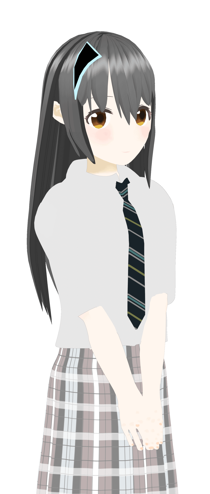

サイト長期閉鎖のお知らせ
横茶横葉 は、約7年に渡って「無料、広告なし」をモットーに様々なソフトウェアを開発し、このサイトで無償配布する製作活動を行って参りましたが、この度サイトの更新を終了させていただくことになりました。
閉鎖の理由は、私個人のやりたいことが大きく変化したためです。今後は私自身の抱く理想像の実現を目指して他の活動に専念していく所存です。
Coffeeブラウザーなど、長期サポートを約束したソフトウェアはまだまだ更新を続けさせていただきますが、コチラのサイトで紹介することは”気が変わらない限り”はなくなります。
GitHubやその他プラットフォームではまだまだ活動していきます。
最後に、私のソフトウェアを使って下さった皆様へ、最大限の感謝を申し上げます。
誠にありがとうございました!!
2025/04/20 横茶横葉
CSSの配布
このサイトではCaffeineCSS,FSLinearを使用してデコレーションを行いました。
さらに自動化スクリプトによって昼と夜でCSSが入れ替わります。
これらのCSSはどなたでも営利非営利問わずサイトにご活用いただけます。
ライセンスは横茶横葉Aライセンスです。
↓横葉の工房より複製

CaffeineCSS
横葉スタジオ制作のCSSを配布しています。また、簡単にWebページが製作できるように実装用テンプレートもご用意しています!
横茶横葉Aライセンスの下で自由に商用利用可能です!

FSLinear
横葉の工房制作のCSS第2弾! 黒基調のスタイリッシュなCSSです!このページでは夜間にこのテーマが設定されています。
横茶横葉Aライセンスの下で自由に商用利用可能です!
Caffeine自動テーマ切替
昼間にCaffeineCSS,夜間にFSLinearをテーマとして自動設定してくれるスクリプトです。昼と夜でサイトを全く違う雰囲気に!
横茶横葉Aライセンスの下で自由に商用利用可能です!
Appendix サイトキャラクターの紹介
横茶横葉のサイトの3度目のリニューアル時に製作され、初登場したサイトキャラクター「横井陽菜」のリファレンスガイドです。
本来は2年前に公開する予定であった紹介文をHDDから見つけ出して引っ張り出して掲載してみました。
今更感はありますが、どうぞ。

横井陽菜 Hina Yokoi
生年月日: 2月12日
身長:161.1cm
体重:44kg
好きな食べ物:ティラミス
好きなもの:スマホ
スマートフォンやタブレットが大好きな19歳。
性格は大人しく、心優しい人柄。
スマホを前にするとテンションが上がる。
頭には寝るとき以外常に
スマホを二等分した髪飾りを身に付けている。
特技は人のスマホの機種当てゲーム。
趣味はカフェ巡り。最近はひとり旅にはまっている。
「スマホは人類の英知」が彼女の座右の銘。
クレジット
キャラクターデザイン & 3D製作:
横茶横葉 (Project Yokonoha)
スタイリング監修:
Mikan
企画:
Yokocha Yokoha Abbreviation Characters Project
キャラクターは以下のアカウントへ移動しました。
More works on @ryokuyo_aoha